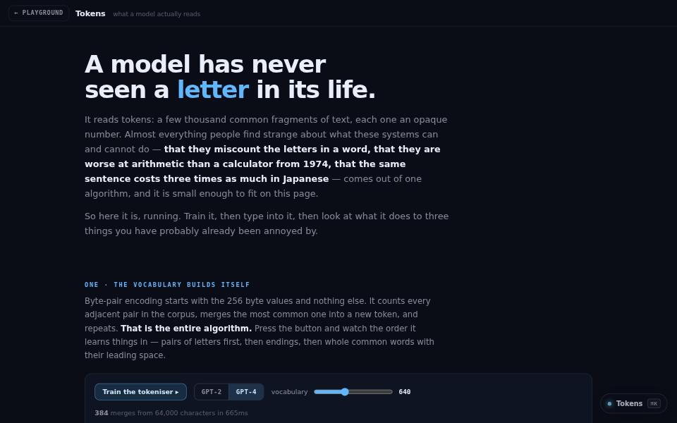

machine learning · about 4 min · The Observatory Reach
Tokens
A byte-pair tokeniser that trains itself in front of you, and the three things it explains about why models behave the way they do.

The problem
Models miscount letters and charge more for Japanese, and the reason, tokenisation, is invisible.
What it does
- Trains a byte-pair tokeniser in front of you
- Shows why a model cannot count the letters in a word
- Shows why the same sentence costs three times as much in Japanese
The most interesting decision
Build the tokeniser rather than call one
The interesting part is the order of the merges, not the finished vocabulary, and a tokeniser you trained is one you can interrogate.
Built with
- Byte-level BPE, 240 lines
- Trains in the page
- GPT-2 vs GPT-4 pre-tokenisation
Evidence
Trains on 64,000 characters in under half a second, with 40 tests. Read its tests
Its world
A crystal word that has split along the seams a tokeniser sees.